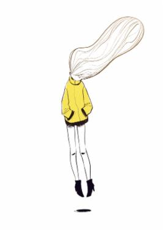
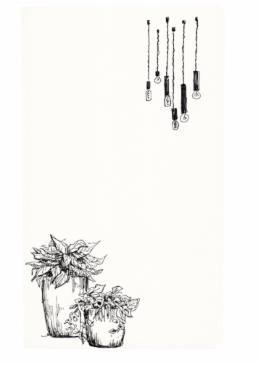
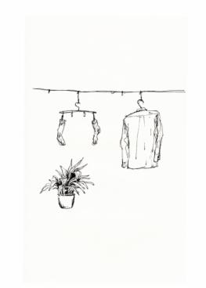
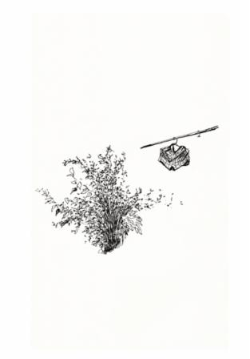

<link rel="import" href="../../bower_components/polymer/polymer.html">

<dom-module id="page-about">

  <template>

    <style is="custom-style" include="page-styles"></style>

    

    <p>Kartika Mediani, usually goes by Tika, is a Story/Animation Artist.
    Enjoying life and nature, tea and fruit, and aim for Good Storytelling in various art form and visual media.
    Has worked at different studios in Los Angeles area, also in Bristol, UK. Most recently lived in Shanghai.
    Privileged to get involved with <a href="http://www.siggraph.org/">SIGGRAPH</a>, consecutively from 2008-2014.
    Life is truly wonderful and quite adventurous!</p>

    <h3>
      <a href="/doc/KartikaMediani_Resume_June2016.pdf" target="_blank">Resume (pdf)</a>
    </h3>

    <h3><a href="https://www.linkedin.com/in/kartikamediani">LinkedIn</a></h3>

    <h3>
      More updated new drawings and stuff at:
    </h3>
    <p>
      <a href="http://ananashunter.blogspot.com/" target="_blank">Sketchblog</a></br>
      <a href="https://www.instagram.com/ananashunter/">Instagram</a></br>
      <a href="http://ananashunter.tumblr.com/">Tumblr</a></br>
      <a href="https://twitter.com/ananashunter">Twitter</a></br>
    </p>
    <p>
      Say Hi! at contact(at)kartika-mediani.com
    </p>

    
    
    

    <p>
      drawings from <a href="http://7414stars.blogspot.hk/2015/11/banal-shanghai.html">"Banal Shanghai"</a>, 2015
    </p>

  </template>

  <script>

    Polymer({is: 'page-about'});

  </script>

</dom-module>
